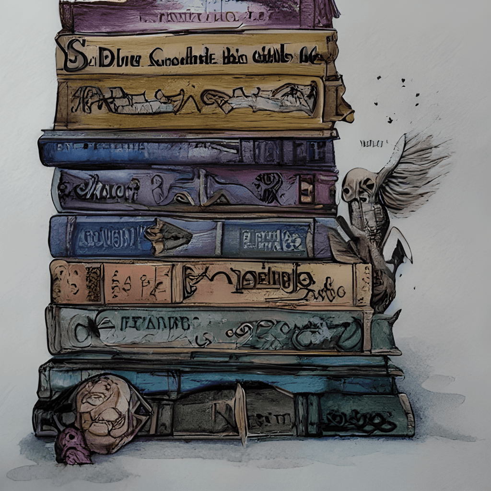

Harry Potter Book Series Summary
J.K. Rowling's Harry Potter series is a captivating tale of magic, friendship, bravery, and the eternal struggle between good and evil. The seven-book saga follows the journey of a young wizard, Harry Potter, from his humble beginnings as an orphan to his destiny as the savior of the wizarding world. The series spans seven books, chronicling Harry Potter's journey from an orphaned boy living with cruel relatives to a heroic figure destined to defeat Lord Voldemort, a dark wizard bent on conquering both the magical and non-magical worlds. Along the way, Harry discovers the power of love, friendship, and sacrifice.
Themes and Legacy
The Harry Potter series explores themes of love, courage, loyalty, and the power of choice. It has captured the imaginations of readers worldwide, inspiring movies, stage plays, theme parks, and a vibrant fandom that continues to thrive.Whether you're discovering the series for the first time or revisiting it, Harry Potter remains a timeless adventure for all ages.The Harry Potter books continue to enchant readers of all ages, inspiring countless fan creations, academic studies, and discussions about its themes and impact. The story remains a testament to the power of imagination and the universal appeal of a well-told tale.